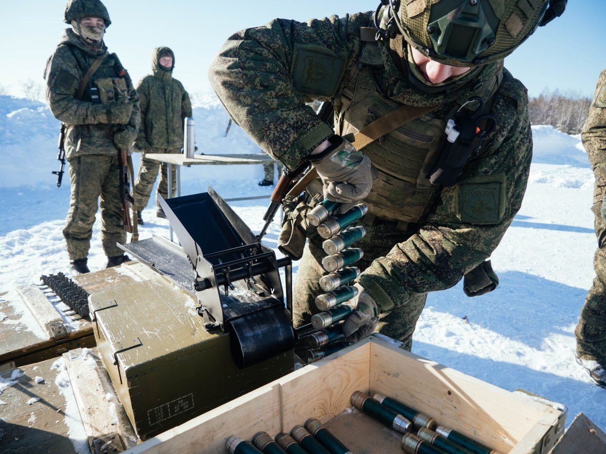

軍事工業分析
戰爭
即
工業力
烏俄戰爭 · 軍工產能 · 武器採購 · 國防工業
跳至年份
2023
2024
2025
2026
✍ 專欄
99
篇報導
3
年度跨度
2023
起始年份
2026
最新年份
前線紀實
突擊
步兵突破陣線，地面戰術執行中

後勤
彈藥補給與裝填作業
夜戰
夜視裝備下的隱匿行動
反裝甲
火箭彈兵部署於城鎮戰場
‹
›
2023
14 篇
2023-03-09
戰爭即工業力 烏俄戰爭突顯出美國軍工業「弱點」
2023-03-10
戰爭即工業力 美國防產業陷「泥沼」尖端武器也躺平
2023-03-11
戰爭即工業力 歐洲產能「全掛」那俄羅斯？
2023-03-22
戰爭即工業力 尖端武器和砲彈的靈魂：炸藥及火藥原料短缺
2023-03-25
美國海軍艦隊司令氣炸！ 怒飆「我不會原諒你們」
2023-05-06
戰爭即工業力 俄國產能恐成烏軍最大夢靨結
2023-06-02
彈藥耗盡 北約秘書長疾呼 盟國應趕快提高產能
2023-06-03
烏俄戰爭燒掉莫斯科多少錢？數據太震撼
2023-06-30
戰爭即工業力 俄軍企進行大規模重組
2023-10-26
問題大了！北約軍委會主席：砲彈單價「翻4倍」還不兼容
2023-11-15
烏克蘭外長嘆 歐盟軍工業能量 「可悲」
2023-11-17
烏克蘭缺彈背鍋 歐洲軍企反嗆官員 缺料 缺工還想怎樣
2023-12-19
俄國防部 烏俄戰爭第2年度匯報：局勢、工業、準則及醫療照護
2023-12-20
五角大廈官員嘆：用6000萬元飛彈 攔6萬無人機 吃不消
2024
25 篇
2024-01-25
「太荒謬了」烏克蘭外長嘆：北韓對俄援助 更勝西方對我
2024-02-24
俄烏戰爭2周年》歐盟報告：軍工企業加持 俄3大產業成長40％
2024-03-02
戰爭即工業力 法總統坦承缺火藥 專家：原料都從「中國來」
2024-03-14
俄砲彈產能 超過西方總和2.5倍 連精準導引武器也輾壓
2024-03-20
「刺針飛彈16倍價？」美挺烏參議員 痛批軍企根本敲竹槓
2024-03-26
俄飛彈吃到飽 烏克蘭外長飆粗口：快給我們天X的愛國者
2024-03-28
美媒：葉門叛軍都搞不定 成五角大廈公關災難
2024-03-28
戰爭即工業力 萊因金屬喜獲45億補助 拼2027產能110萬發
2024-03-30
前捷克軍情局長：烏俄戰爭為「去美元化」大戰一環 但趨勢已不可逆
2024-04-10
烏克蘭官員：美國無人機貴又爛 陸無人機便宜可靠
2024-04-18
陸艦下水餃 美艦全延期 國會急找代罪羔羊
2024-04-19
「襯套292萬？」900倍天價 美議員槓上空軍部長
2024-04-19
飛彈射光 美海軍部長開口要325億
2024-06-21
戰爭即工業力 歐洲軍企催歐盟快給錢 以利生產155毫米砲彈
2024-06-27
英國智庫：俄羅斯砲彈和飛彈產量 翻5至15倍
2024-07-30
美國會報告出爐：若與中國開戰 彈藥只夠打「30天」
2024-09-07
戰爭即工業力 俄羅斯坦克工廠 產能繼續噴
2024-09-10
德媒揭西方武器「放著涼」烏軍抱怨：沒料件 能幹嘛？
2024-10-02
以色列飛彈防禦體系 成本效益「嚴重」不對稱
2024-10-04
美國攔截伊朗飛彈 用光未來一年份「標3」產量
2024-12-13
俄坦克產量比前線需求還多 歐盟籲加速軍備建設
2025
50 篇
2025-01-02
戰爭即工業力 俄羅斯完成2024年坦克生產目標
2025-01-03
2024俄國接收14批新戰機 產能持續擴大 種類一次看
2025-01-03
師徒角色互換！俄靠中國助推發動機革新 AI帶來新局面
2025-01-15
北約秘書長：俄國3個月軍工產能 超過全北約1年量
2025-01-21
陸高超音速「空對空」飛彈存在曝光 模擬火星環境極端測試
2025-02-19
美國空軍機隊妥善率創20年最低！F-22、F-35為主因
2025-02-20
范斯：停止道德空談「面對現實」歐洲武器都打光 軍工又無力
2025-02-26
美國飛彈荒迎來轉機 L3Harris擴建火箭發動機工廠
2025-03-01
影》射程1000公里！陸高超音速「空對空飛彈」試射震撼曝光
2025-03-04
戰爭即工業力 丹麥選定挪威軍企Nammo重建彈藥廠
2025-03-04
美軍班兵NGSW新武器 6.8毫米彈藥廠動工拚2028年上線
2025-04-20
年產量翻倍！今年第2批Su-34出廠 交付俄空軍
2025-04-26
北歐4國聯合採購870輛CV90步兵戰鬥車 標準化降低成本
2025-04-29
戰場勝利始於生產 美國力拼砲彈月產能10萬發
2025-04-29
美軍研發「不需要也用不到」M10坦克 成採購體制失敗縮影
2025-04-29
正視軍工產能問題 愛沙尼亞擬建RDX炸藥廠
✍ 張威翔 專欄起始
2025-05-24
Military》普丁是如何逐漸佔上風？揭開俄攻勢升溫內幕 烏深陷難局
2025-06-01
Military》川普喊建「金穹」 習近平、普丁為何跳腳？
2025-06-08
Military》烏克蘭「蜘蛛網行動」空前戰果 難撼戰略現實
2025-06-15
Military》混合動力趨勢？中國99式油電戰車 預示未來戰場
2025-06-22
Military》打掉一枚虧一枚！以色列陷消耗戰困局
2025-06-29
Military》誰在自導自演？國家如何為戰爭布下致命騙局
2025-07-13
Military》經濟規模僅一個「廣東省」為何北約扳不倒俄羅斯？
2025-07-20
Military》M1艾布蘭坦克不是「神兵」烏克蘭慘況給台灣的警訊
2025-07-26
Military》柬埔寨交戰泰國軍力比一比！解析驚人差距「無戰機」也能打？
2025-08-03
Military》不是軍力！最新兵推曝台灣「隱形罩門」
2025-08-10
Military》台灣有強項？摩托車在現代戰爭中的作用
2025-08-17
Military》西方都錯了 俄絕非靠「人海戰術」維持局勢
2025-08-24
Military》沒被淘汰 烏克蘭戰爭如何重塑坦克定位
2025-08-31
Military》烏克蘭狂轟能源設施 俄為何能屢次復原？
2025-09-07
Military》陸93閱兵大秀新武器 看懂台海嚴峻挑戰
2025-09-14
Military》美軍壓境委內瑞拉 劍指全球最大石油儲備
2025-09-21
Military》2週2500枚滑翔炸彈 澤倫斯基意外揭俄驚人實力
2025-09-28
Military》供應鏈被掐喉！西方再工業化困局
2025-10-05
Military》東亞戰略現實「鐵娘子」高市早苗如何強硬抗中？
2025-10-12
Military》「鎖喉」中國？美國海權思維 碰上資源巨獸
2025-10-19
Military》西方掠奪百年 非洲緊握稀土礦產不再沈默
2025-10-26
Military》地圖不會說謊 烏東戰線已崩
2025-11-02
Geopolitics》從沈伯洋案 鑽探索羅斯、民主黨全球網絡
2025-11-09
Military》專家回顧烏戰三年 俄軍演變與歐美錯覺
2025-11-16
Geopolitics》高市為何惹毛陸？918到珍珠港皆稱「存立危機」
2025-11-23
Geopolitics》台灣有事？日本、IPAC喊得最大聲 沒一個敢建交
2025-11-30
Geopolitics》烏克蘭下場台灣看懂沒？從俄談判要求看「大國紅線」
2025-12-07
Military》不知彼、不知己：台灣缺乏面對現實的勇氣
2025-12-13
Geopolitics》陸半導體10年 美國認了：越制裁越壯大
2025-12-14
Military》誰在破壞規則？西方如何合理化公海掠奪
2025-12-20
Geopolitics》拿國安體系來保位 尹錫悅案對台灣的啟示
2025-12-21
Military》從波蘭總統「贈送大禮」看烏克蘭納粹問題
2025-12-27
Geopolitics》歐美慣稱的「普丁侵略藉口」遭最新解密文件戳破
2025-12-28
Geopolitics》不是穿越！2019年就寫好的俄烏戰爭劇本
2026
14 篇
2026-01-03
Military》想不到吧？國軍伙食相當不錯「遠勝」日韓
2026-01-04
Military》解析美軍捉拿馬杜洛的3支關鍵力量
2026-01-10
Geopolitics》大咖動念「退出北約」能擺脫美戰略綁架？
2026-01-11
Military》委內瑞拉之後 中俄「百年變局」還推得動？
2026-01-18
Military》川普威脅與北約排擠下「冷衙門」歐洲軍團能復甦？
2026-01-25
Military》戰報很熱鬧 現實很殘酷：俄軍裝甲車「越打越多」
2026-02-01
Geopolitics》剛果悲歌：礦產、代理人與西方共犯結構
2026-02-08
Geopolitics》再見華盛頓！巴基斯坦「中沙土」鐵三角重建南亞格局
2026-02-15
Military》消耗戰算術 俄烏火力差距如何決定傷亡
2026-02-22
Military》雙航母壓境 美伊兵力全盤解析
2026-03-01
Military》卡達雷達到樂山 伊朗空襲敲響台灣防空警鐘
2026-03-08
Geopolitics》戰火延燒全球！能源、科技與農業供應鏈連鎖危機
2026-03-15
Geopolitics》晶片產業命繫中東！台灣「矽盾」軟肋不只氦氣
2026-03-22
Geopolitics》猶太人燒以色列國旗？真相比你想的更複雜
⇧